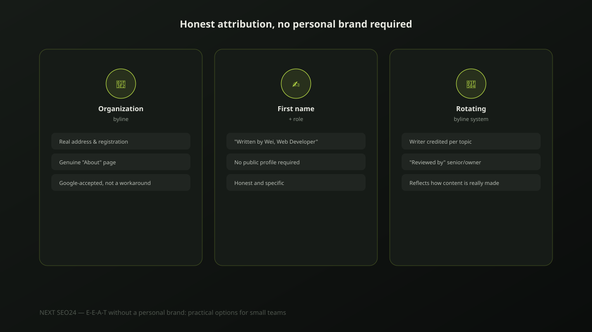

E-E-A-T without a personal brand: practical options for small teams
A common worry from small business owners: "We don't have a public personality to put on our content — does that hurt our E-E-A-T?" It doesn't have to. Google's actual guidance describes trust signals, not a requirement for a public personal brand. Here are the honest, practical attribution options that work for a genuinely small team.
The real misconception: E-E-A-T doesn't require a celebrity
E-E-A-T stands for Experience, Expertise, Authoritativeness and Trustworthiness — none of which require an individual with a personal following, a media presence, or a public social profile. What Google's guidelines actually describe is verifiable evidence that real expertise sits behind the content and that the business publishing it is transparent about who it is. A two-person consultancy with an honest, verifiable "About" page can meet this bar as genuinely as a solo creator with a large personal brand.
Why "Written by Admin" is worse than the alternatives
A generic, unnamed byline like "Admin" or no attribution at all reads as low-effort and gives a reader nothing to evaluate. But the wrong fix is worse: inventing a persona with fabricated credentials is a genuine trust violation if it's ever discovered, and a real risk if that invented name happens to collide with an actual person. Between the two, honest and minimal beats fabricated and impressive every time.
Option 1: Organization-level authorship, done properly
Google's own documentation explicitly accepts organizational authorship as legitimate — content credited to the business itself, backed by a genuinely transparent, verifiable "About" page: real business registration details, a real address, real contact information. This is the most straightforward option for a small team, and it's honest rather than a workaround, as long as the content genuinely doesn't require an individually credentialed expert (medical, legal or financial advice generally does).
Option 2: First-name-only or role-based attribution
Most small businesses do have a real person who wrote a given piece — crediting them by first name and role ("Written by Wei, Web Developer") is honest and specific without requiring that person to maintain a public personal brand, social media presence, or media profile. This gives a reader more to evaluate than an organization byline alone, without asking a team member to become a public figure they never signed up to be.
Option 3: A rotating byline system for a small team
For a two- or three-person team, a simple rotation works well: the person who actually wrote or has direct experience with the topic is credited as the author, with a brief note that it was reviewed by a senior team member or the business owner. This reflects how content genuinely gets made on a small team — one person drafting, another reviewing — rather than attributing everything to a single name that didn't do the work.
What matters more than who's named: verifiable claims
A named author with a polished bio but generic, unverifiable content does less for trust than an organization byline paired with specific, checkable detail — real numbers, a genuine process walkthrough, a first-hand example. Our hands-on E-E-A-T guide to author pages and trust signals covers the Person schema implementation for when you do have a named individual to credit; the content specificity described there matters regardless of which attribution option you choose.
The one thing to avoid: fabricated personas
Never invent a fictional author with fabricated credentials, years of experience, or accolades to make content look more authoritative than the business genuinely is. Beyond the policy risk if discovered, a fabricated name can coincidentally collide with a real person, misattributing invented claims to someone who never made them — a real risk worth checking for deliberately before publishing, not just avoiding by accident.
A practical checklist
- Every piece of content has some form of honest attribution — organization, first name, or role — never left blank
- No fabricated names, credentials or accolades anywhere on the site
- A genuine, verifiable "About" page with real business details, whichever attribution style you use
- Content includes specific, checkable detail — not just a credentialed-sounding name attached to generic claims
- If crediting a real team member by name, confirm they're genuinely comfortable being publicly attributed
If you're not sure which attribution approach fits your team, send us your site — we'll recommend an honest option that matches how your content actually gets made.
Frequently asked questions
Do I need a real named person with a public online profile for good E-E-A-T?
No. Google's guidelines describe trust signals — genuine expertise, verifiable claims, a real business behind the content — not a requirement for a public personal brand or social media following. A small business can build strong E-E-A-T through organization-level transparency and verifiable content quality without any individual becoming a public figure.
Is organization-level authorship acceptable to Google, instead of a named individual?
Yes, for many content types. Google's own documentation explicitly allows organizational authorship, provided the organization itself is transparent and verifiable — a real address, real registration details, a genuine About page. It's a legitimate, honest option, not a workaround, as long as it isn't concealing content that genuinely should have individual medical, legal or financial credentials attached.
What's worse for E-E-A-T: no author byline at all, or a generic "Team" byline?
A generic but honest "Team" or organization byline is better than no attribution at all, and both are far better than a fabricated persona with invented credentials. Missing attribution reads as low effort; a fake name with fake credentials is a genuine trust violation if discovered. Honest, even minimal, attribution is always the safer and more defensible choice.
Not sure how to handle author attribution for your team?
Tell us how your content actually gets made — we'll recommend an honest attribution approach that fits your team's real size and structure.
Chat on WhatsApp →